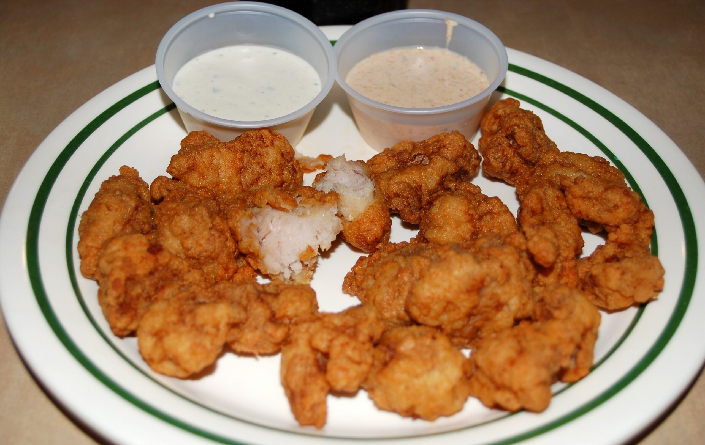
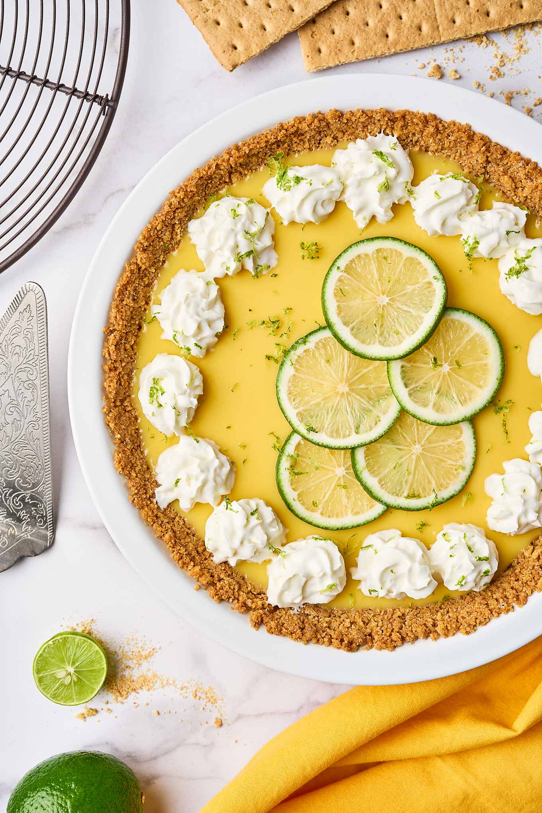

Welcome
“Explore the Sunshine State of Florida, a bright and inviting destination filled with lively attractions and warm coastal wonders. From its sandy shores to its rich wildlife, Florida provides a refreshing blend of relaxation, excitement, and tropical charm.”
Tourist Spots
-
Magic Kingdom Park
The Magic Kingdom in Florida is the most visited park in the world -- bringing in over 20 million visitors! Magic Kingdom opened in October 1971, and is known for its beautiful Cinderella themed castle. The park is meant to be similar to Disneyland, with of course it own unique features.
-
Miami City
Miami is known for its beautiful beaches, vibrant nightlife, and diverse culture influenced by its proximity to Latin America. It is famous for its stunning beaches, especially South Beach, its iconic Art Deco architecture, and its strong Cuban heritage, particularly in neighborhoods like Little Havana.
-
Fort Lauderdale
Fort Lauderdale is famous for its beaches, arts, culture, and events. From shopping on Las Olas Boulevard to gondola rides on the canals, to a historic riverfront, this is the "Venice of America." Along Las Olas Boulevard, shopping, dining, and the historic districts.

Famous Food
-
Gator tail
Alligators are abundant in Florida, and well, people naturally eat what's abundant in their regions — hence, the popularity of gator meat in the Sunshine State. Or their tails, at least. You'll find gator tail in the grocery store, if you want to cook it yourself, or at a multitude of restaurants throughout Florida. It may sound cliche, but the taste is very close to chicken, with the mildest notes of fishiness. In fact, I think the texture is more like scallops.
 -
Key Lime Pie
Key Lime Pie is a sweet, creamy dish with a moderate amount of tartness thanks to its signature Key limes. Besides the citrus fruit, the dish is usually made with sweetened condensed milk and egg yolks, which form the custard that's served inside of a graham cracker crust.
 -
Cuban Sandwich
Cuban sandwiches can be found all over Florida. They're especially popular in Southern Florida, around Miami, but you can find them at 7-11s and other corner stores throughout the Sunshine State. You can also find them at many mom-and-pop restaurants — but the best ones you'll find are at authentic Cuban eateries.